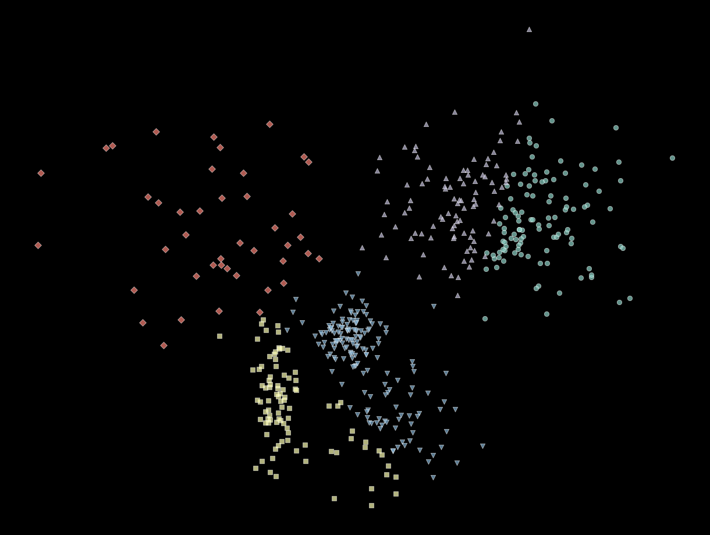

Mapping Data Gaps with Embedding Spaces
Published on: October 22, 2024
In the realm of machine learning, neural network embeddings have emerged as powerful tools. They encode complex data—be it images, text, or structured inputs—into rich, dense vectors that are both manipulable and analyzable. Beyond enhancing tasks like classification or recommendation, embedding visualizations offer a unique lens to examine the structure and quality of datasets.
One particularly valuable application of embeddings is in identifying data gaps. These gaps represent patterns or regions in your dataset where the model struggles due to insufficient, inconsistent, or imbalanced data. Embedding visualizations make spotting these gaps intuitive and actionable, helping to refine datasets for improved AI performance.
Understanding Embeddings and Their Power
Embeddings transform high-dimensional input data into a lower-dimensional space where similar data points cluster together. For example, in telematics, embeddings of dash cam footage can group videos showing safe driving behaviors apart from risky ones, such as abrupt lane changes or following too closely. These clusters help isolate critical driving patterns for further analysis.
Visualizing these embeddings using tools like t-SNE or UMAP allows us to map complex, multidimensional datasets into a human-readable 2D or 3D representation. These visualizations aren’t just aesthetically pleasing—they’re diagnostic tools that reveal patterns, clusters, and gaps in your data.
Spotting Data Gaps in the Embedding Space
When projecting your data into an embedding space, certain gaps or inconsistencies become evident. Sparse clusters with few data points, for instance, may indicate a lack of examples in a particular category or feature range. In manufacturing QA, this could manifest as a sparse cluster of images showing “discoloration defects,” indicating an underrepresented defect type in the training data. Similarly, large unexplored regions in the embedding space may suggest missing features or categories in your dataset, such as critical safety scenarios involving workers and malfunctioning machinery in factory safety contexts.
Overlapping clusters often reveal ambiguities in labels or insufficiently diverse examples. For instance, in retail security, overlapping clusters of images labeled as “shoplifting” and “legitimate bulk purchases” may signal labeling ambiguity or a need for better representation of distinct behaviors. Additionally, outliers—data points far removed from any cluster—could represent anomalies or mislabeled samples, such as an unusual medical device usage scenario in healthcare that warrants deeper investigation.
Actionable Steps for Addressing Data Gaps
Once data gaps are identified, actionable steps can bridge them effectively. Sparse clusters can be augmented with synthetic data generation or targeted collection, such as creating synthetic images of discoloration defects for manufacturing QA. To address overlapping clusters, ensuring better label quality and collecting additional examples—like diverse dash cam footage of gradual versus abrupt braking in telematics—can help clarify distinctions and improve generalization.
Expanding datasets to cover unexplored regions, such as adding edge cases of unusual customer behaviors in retail security, strengthens model robustness. Similarly, investigating outliers can uncover unique scenarios, such as a worker bypassing safety guards in factory environments, which may require inclusion in training data to improve model effectiveness.
Why Embedding Spaces Excel at Finding Gaps
Embedding spaces do more than show where data exists—they highlight relationships, separability, and patterns not apparent in the raw input space. These representations often capture underlying semantic meanings, making them invaluable for identifying meaningful gaps. By reframing embeddings as a diagnostic tool for dataset quality, you’re tapping into their full potential—not just to improve machine learning performance but to ensure your models are trained on robust, balanced, and representative data.